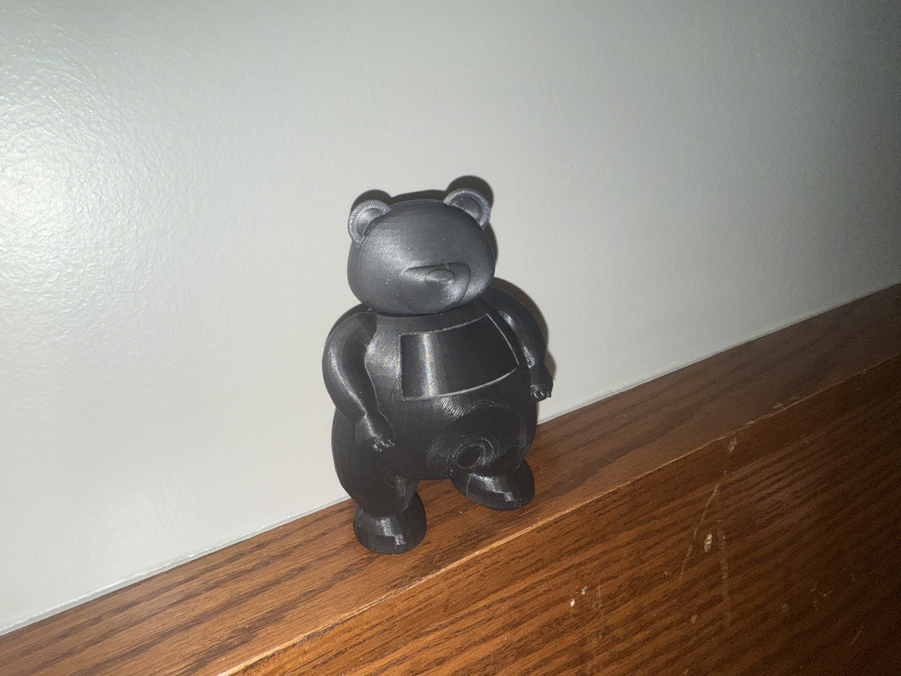
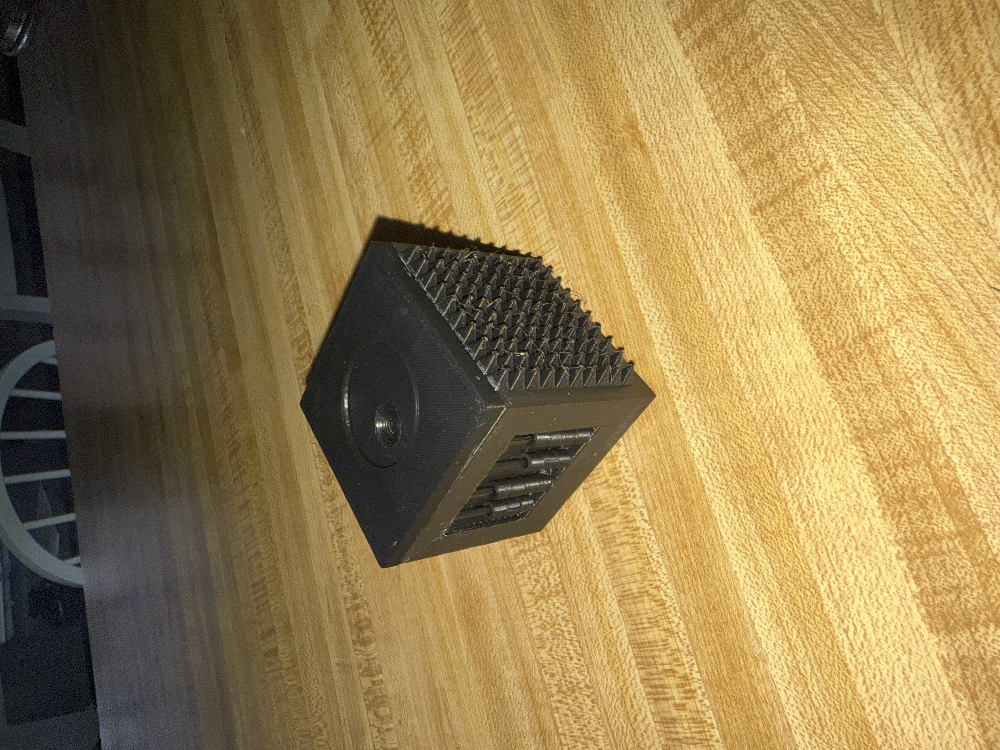
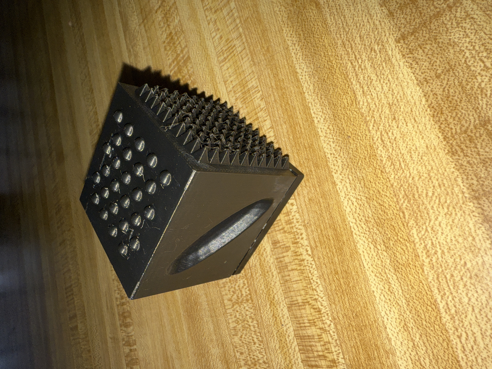
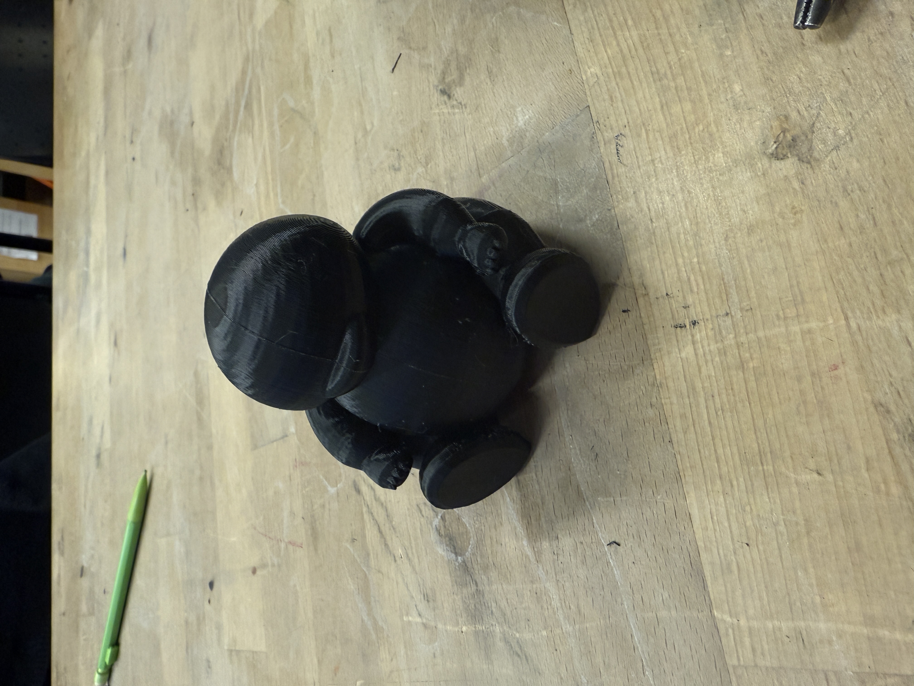
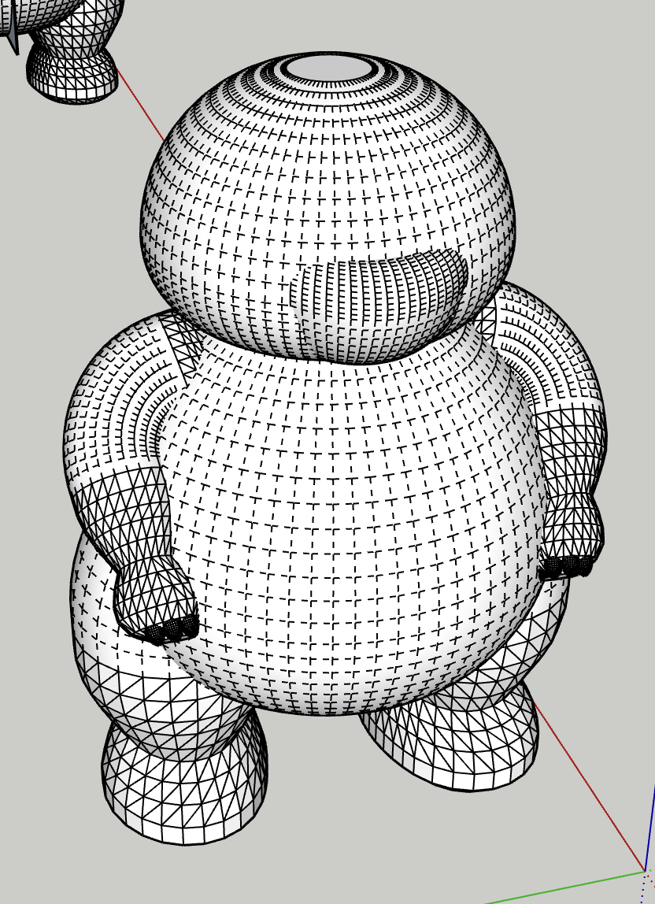
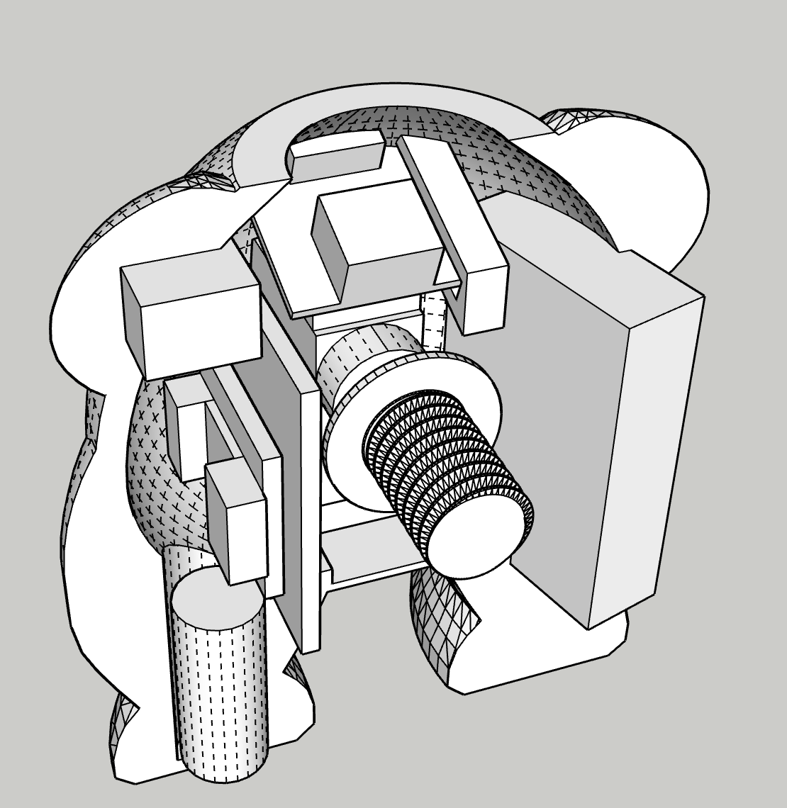
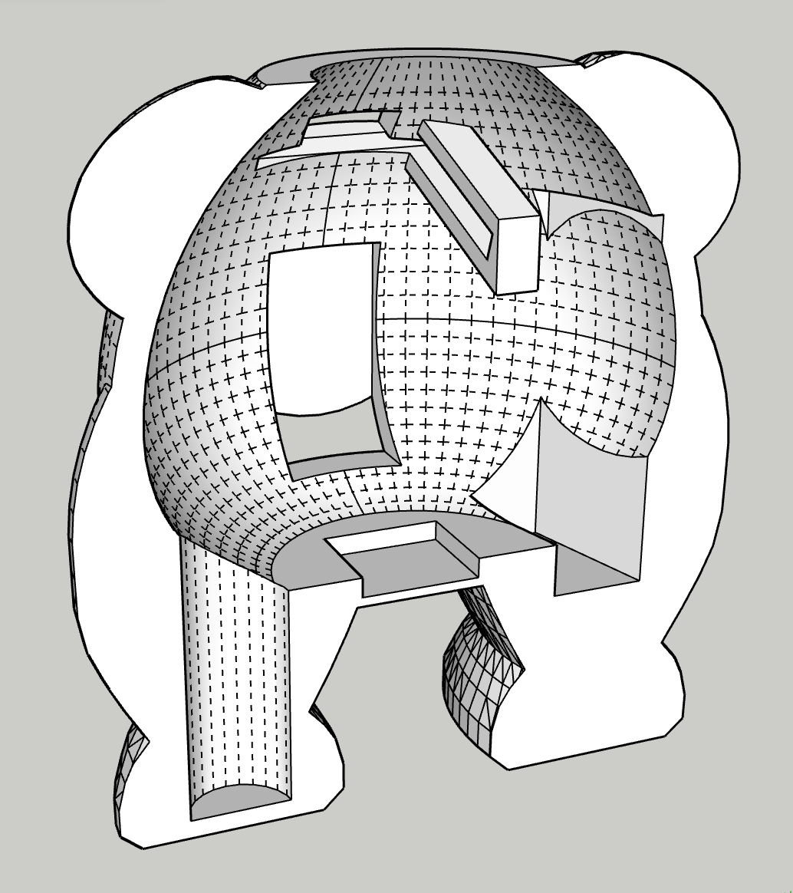
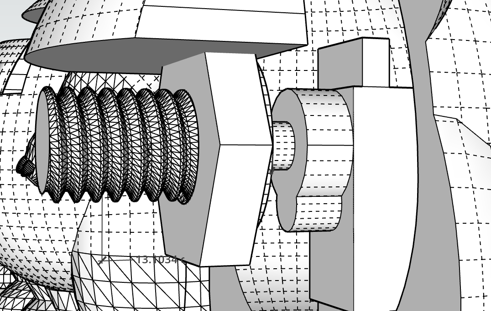
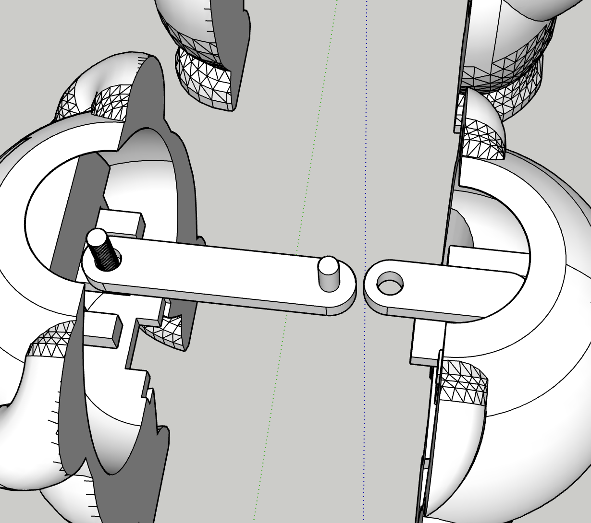

Role: Researcher, Designer, Prototyper, Engineer
Tools: Sketchup, Arduino IDE, 3D Printer, QT PY Microcontroller, Vibromotor, servo motor, Capacitive touch sensor
Project Type: Physical design, product design, physical computing
Pace is a handheld tactile device designed to support nervous system regulation. Instead of tracking habits or rewarding behavior, it responds to interaction with subtle movement, vibration, and resistance. The goal is to guide users from restless energy into a calmer state through physical interaction rather than instruction.
The project started as a habit-tracking robot that would respond emotionally to completed or missed habits. It was designed to encourage consistency through visual feedback, using reactions like “happy” or “sad” states depending on user behavior.
This was then shifted when I realized the limitations of this project and that the changes that would need to be made to make it work no longer brought me joy.
The project pivoted away from tracking habits toward supporting regulation. Instead of reacting to success or failure, the device now provides a steady breathing rhythm and tactile feedback that users can choose to follow or ignore.
I redesigned the experience focusing on meeting users where they are, not forcing calm immediately.
This creates a gradual shift from energy release to regulation.
Initial testing focused on tactile interaction. I designed and printed a box with multiple different fidgets to understand what types of input were calming versus distracting. The overwhelming consensus being: movement is key.
A major insight was that most fidget tools are designed to release energy, not regulate it. This shifted the focus toward slower, more controlled interactions.


Most early designs allowed fast, repetitive motion. This reinforced restless behavior instead of calming it.
Solution: Introduced resistance, slower mechanics, and breathing-based motion to guide interaction.
Users didn't instinctively know how to hold the object, and certain features interfered with grip.
Solution: Redesigned proportions and positioning to create a clear, natural hand placement.


The battery, motor, and sensors repeatedly conflicted with the physical form.
Solution: Iteratively scaled the model and reorganized internal layout to accommodate all components.


Material thickness prevented reliable detection through the shell.
Solution: Adjusted thickness and introduced copper tape to expand the sensing area.
The motor did not have enough range of motion to allow for enough rotation for my original plan to move the chest piece.
Solution: Tested many different systems and landed on an arm crank.


Currently, I do not have a working final product. My battery blew out after it was assembled because it had accidentally been running overnight. So, I am awaiting a new battery hoping things will work as intended and knowing in my heart that it won't.
This project has fundamentally changed who I thought I was.
I really enjoy 3D design but can become frustrated when bringing that into the real world.
I like working with circuits but only when they behave as they should and I can have my day ruined by a technical issue that takes time to understand.
I have been told that I am resilient but I never understood what that meant until this project. The problems that I outlined in this documentation are only a drop in the bucket of the issues that occurred while attempting to complete this, and yet I took them as they came and made it work.
Comparison is my biggest enemy. With my change in idea I had much less time than my fellow classmates to complete this project yet still held the expectation that it would be at the same level as theirs.
Work can not be my whole world. I have spent the past month working on this basically nonstop with little time for friends or other projects. And now I graduate in one week and have had no time to enjoy my last weeks in Colorado and still have three other final projects to complete.
If I could do this project over again, there are many things that I would do differently.
This reflection is coming 4 months after this project was due. The new battery came in, it was working and then it wasn't. Every connection was checked and stable and the battery was still working, so I don't really know why it wouldn't turn on.
I feel my last reflection was a little exaggerated due to my frustrations with the impending outcome of this project. Yes, I have learned many things from this project that were earned out of frustration. But I have also learned failure and acceptance of that. I have learned that things do not always turn out as we expect but it is not the end of the world. I still graduated, and in ten years time I will look back on this and think about the amount of effort I put in and the amazing moral support of my professor. Not the fact that in the end it didn't work.
I hope to one day feel less overwhelmed by this whole experience and revisit this project for my own peace of mind. So maybe this won't be the last update.